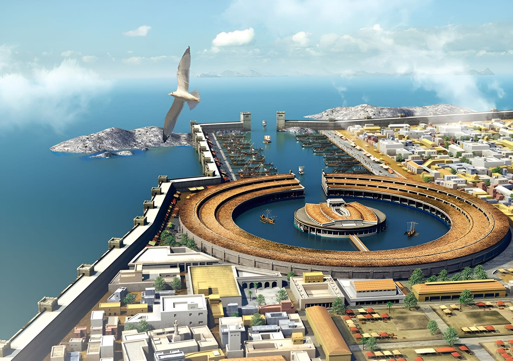
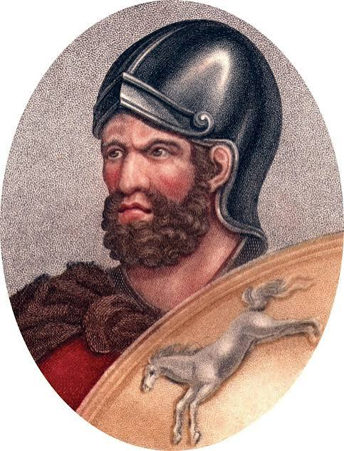

The downfall of Carthage
After the war, Carthage had to make a lot of concessions to Rome. Specifically, they went into massive debt with Rome, which also hurt their military, as a lot of their soldiers were mercenaries they could no longer afford, and they had to give up most of the territory they held. This led to a not so subtle decline in Carthage, they went from being one of the greatest superpowers on the planet, to not even worth bringing up in conversation. About fifty years after the Second Punic War, Carthage and Rome would go to war for the last time. The Third Punic War was, frankly, a one-sided slaughter; the Carthaginians didn’t stand a chance and were just trying to hold out. The Third Punic War ended in the complete destruction of Carthage and a very powerful Rome.
Where was Hannibal?
The first couple of battles happened in Spain, which, while important, didn’t really make or break the war, and isn't what most people are thinking of when they think of the Second Punic War. The first big one is Hannibal against the Alps; essentially, Hannibal Barca wants to take the fight to Rome instead of playing defensivley like Carthage did in the First Punic War. To do this, he decided to go up through and past Spain, and cross through the Alps, to pass into Rome from above. This maneuver, while costing him elephants and men, is wildly successful, and he uses this time to basically resupply inside of Rome, get a couple of early victories, and really set the scene for a lot of his later battles. He showed great intellect and battle skill through a lot of these early battles, and gained a lot of notoriety for using ambushes and unconventional tactics. This early time period is what most people associate with Hannibal and the Second Punic War.
